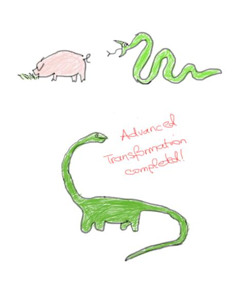

Advanced Transformations

The business gets serious
Let's carry on with applying some more but advanced transformations on our Gelly-Graph.
Join
Gelly provides specialized methods for joining the vertex and edge datasets with other input datasets. We are going to see how to use the joinWithVertices() method. joinWithVertices()joins the vertices with a Tuple2 input data set. The join is performed using the vertex ID and the first field of the Tuple2 input as the join keys. The method returns a new Graph where the vertex values have been updated according to a provided user-defined map function.
For example, if we want to update the vertex values in our 'twitter Graph' (created in Tutorial1) with the number of followers for each user, then we proceed follows:
- Calculate the indegree of every Vertex
DataSet<Tuple2<Long, Long>> vertexInDegree = graph.inDegrees(); Graph<Long, Long, NullValue> updatedGraph = graph.joinWithVertices(vertexInDegree ,
new MapFunction<Tuple2<Long,Long>, Long>() {
public Long map(Tuple2<Long, Long> value) {
return value.f1;
}
});
Graph<Long, Long, NullValue> filteredGraph = updatedGraph.filterOnVertices(new FilterFunction<Vertex<Long, Long>>() {
public boolean filter(Vertex<Long, Long> vertex) {
// keep only users with followers above N
return (vertex.getValue() > N);
}
});
// get the number of users with followers above N
Long usersWithFollowersAboveN = filteredGraph.numberOfVertices();
In case we want to store information regarding how many people a user follows, then instead of inDegree we just need to use the OutDegree. With our sample data set, you can write your function and verify that there are 4 users who are following more than 200 people.
Union
For instance, if you want to merge the graphs of two different social networks then you can resort to Gelly’s union() method which performs a union operation on the vertex and edge sets of the specified graph and current graph. Duplicate vertices are removed from the resulting Graph, while if duplicate edges exists, these will be maintained as shown in the figure below.
network1.union(network2);

Difference
Gelly’s difference() method performs a difference on the vertex and edge sets of the current graph and specified graph. So in case we have two graphs and we want to analyse the difference in connectivity or for instance which users are present in one graph and not the other, then we can simply call the difference method.
This concludes our discussion regarding transformations in Gelly. Next, we are going to look at some other advanced topics like neighborhood methods and graph validation.